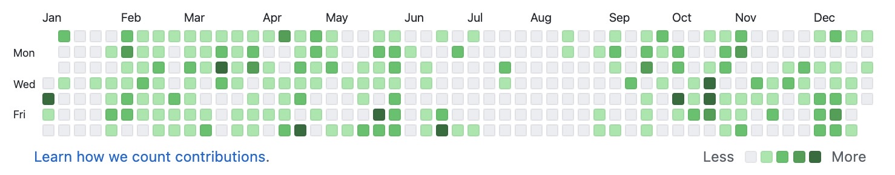

我终于闲下来了——可以在 2021 刚好过去一周的日子，在 2021 第一个大雪纷飞的日子，写下我 2020 的总结。
正事
2020 年大概干了这些『正事』：
- 重构 Hedgehog
- 粗略地学习了一下 Ruby，Rust
- 腾讯实习（一个日志系统的 SQL 查询引擎）
- 为了毕设学习数据库事务处理
- 入门 Haskell
- 沉迷 C++ 模版
- 可能还忘了一些不值一提的…

2020 年 Github 的贡献记录，还是挺『绿』的🤪。中间没有绿的是在腾讯实习的时候，果然工作是我好好写代码的最大阻碍🧐。回想起来，我还是写了不少代码，感觉技术提升也很大。
读书人的事
读了不少书。
2020 我开始接触了哲学类的读物。有很多想不通的问题期望在哲学中寻找答案，但是读了哲学该疑惑的还是要疑惑。『不惑』是一种多么难的境界呀。我没能在哲学中寻找到一切问题的终极答案，但是我也不再纠结于答案本身。我现在甚至觉得有一个终极答案是可怕的，就像是人生之路有了一个确定的终点。然而，重要的不是有一个终点，而是『可能性』——路可以一直延续下去的可能性。
年度最爱——加缪的《鼠疫》。《鼠疫》一书弥漫着哲学家的理性，同时理性之下又蕴藏着对世界炙热的爱。简单说来，这本书在疫情期间给了我直面生活的勇气。
从『真垃圾』到『针不戳』
2020，我的口头禅从『真垃圾』变成了『针不戳』。我室友以前说我的口头禅是：『真垃圾』、『好烦啊』，『完了』。但是 9 月份回到学校后，我的口头禅变成了『针不戳』。
其实我很多时候还是很想说『真垃圾』，但是我学会了暗示自己积极一点，于是脱口而出的『真垃圾』慢慢变成了『针不戳』。暗示的力量太强大了。以前说『真垃圾』多半是为了发泄对自己的不满、愤怒，例如代码写得不顺的时候。但是『真垃圾』除了暂时的宣泄外没有任何的帮助，不能让我把代码写得更好，反而常常陷入了更深的自我埋怨之中。相反，『针不戳』让我用一种积极的心态面对眼前的不顺利，像是在逆境面前给自己打气一样。
当然，这样的口号只是表面的变化。更加深层次的原因是：我能接受自己了——接受自己不够完美，接受自己会把事情搞砸，接受自己的懦弱、痛苦与难堪…
让我学会这些的是2020年的疫情。疫情让我认识到自己在疫情、system（用村上春树的话来说）面前的无力。我渐渐意识到个体的渺小，意识到这个世界上太多的事情身不由己，正如罗翔老师经常引用的那句话：
我们登上并非我们所选择的舞台，演绎并非我们选择的剧本。
这不是一种宿命论的想法。它是告诫我们生活的环境不能由我们选择，我们的选择也常常受到他人的影响。我们大多数时候只能也必须作为一个海德格所谓的『常人自我』而活着。但是，不要忘记『常人自我』也是自我，『常人自我』不是『非我』、不是『不真实的自我』。如果不能接受这点，恐怕活着会很痛苦吧。
这样的接受自我并非意味着纵容，更不会导致放纵。相反，我对自己有更加理性的认知，我更加清楚自己脚下的土地、自己的来路。我甚至更加有改变的勇气，有反抗的动力，我依然能『虽千万人吾往矣』。用项飙老师的话来说，这是『认命但不认输』。
我记性很差，忘记了很多逝去的日子，但是我可能会把 2020 记得很久。我会记得疫情；会记得那些抽象概念引发的混乱；会记得我的困苦和迷茫；会记得我的怀疑和虚无。当然我也不会忘记春天河道上的蓝花矢车菊；不会忘记我久久彳亍后的勇敢…
最后引用《了不起的盖茨比》结尾吧：
It eluded us then, but that’s no matter—tomorrow we will run faster, stretch out our arms farther… And one fine morning—
So we beat on, boats against the current, borne back ceaselessly into the past.